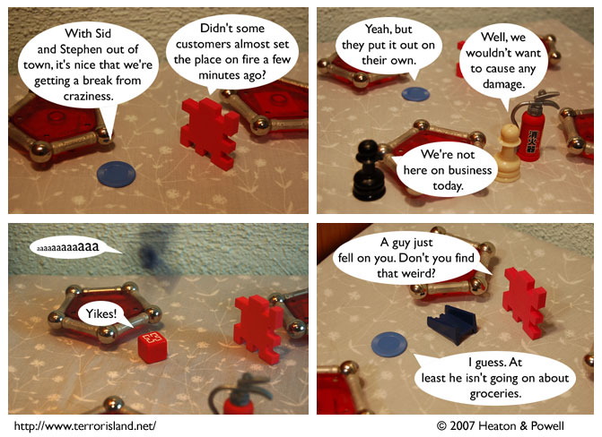

Strip #122
— Friday, March 23, 2007
The fire didn’t speak English, so they had to use a Japanese fire extinguisher
Notes, Thoughts, &c.
Ben’s Notes
Getting a picture of Ned falling was harder than I’d thought. There were a couple shots that did a better job of showing the falling action, except that in them, I missed and hit Liln or a table instead.
Lewis’s Notes
This update was late, for which I apologize, but we are going to blame the Teapot Dome scandal, rather than Internet, because Internet gets upset when you blame it for your problems, and the Teapot Dome scandal is just happy to be getting discussed.